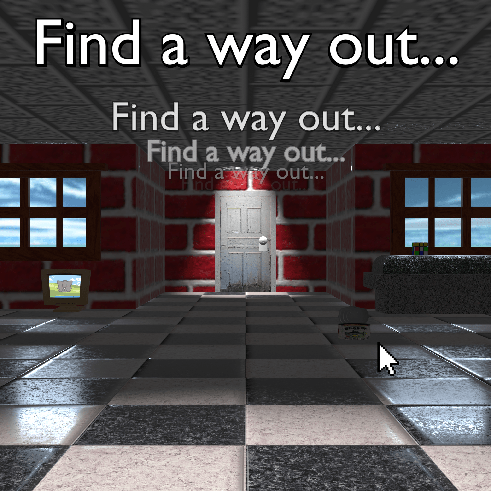

Portfolio of Jordan/Kimberly Smith
Portfolio of Jordan/Kimberly Smith
things todo:
add posters from evc art035 (art-74 equiv, midterm and final)
add game made for art-101 (final)
add link to website designed for art-109
add some work from art-15 so far
Artist Statement
As a kid I've always held a deep fascination with art, but the world I was born into seemed all too eager in
trying to stop me from persuing the arts at all costs. Most of my early artworks from Middle School were Fs,
all thanks to my art teacher's religious views on left handed people. My parents would attempt to dissuade
my artistic passion and try to coax me into being their sweet lil famous Basketball player. And when I
decided to just post my art in early online spaces and try to make some friends, the strangers online
bullied the 13 year-old me off my platform because I couldn't draw Sonic the Hedgehog to their standard.
Ultimately, this lead me to not only give up on art, but almost everything I enjoyed in my life.
But despite the odds, here I am. As an artist, I want to make sure that people know that they can always
persue their interests, despite what the world may think.
My medium is 3D modeling, and my canvas is the program Blender. I was never formally taught 3D Modeling,
instead relying mostly on my intuition and studying the modeling and texturing techniques of games I like to
get a grasp on how they were put together.
Blender, as a program, allows me to create a world heavily inspired by the hardware I grew up with in the
late 90s and early 2000s, specifically the visual aesthetic of low polygon models, and highly compressed
textures which combine together to create a simulacrum of the world we inhabit.
I love the warped and wobbling polygons and sharp pixelated textures of the original Playstation, I love the
blurred visuals and almost liminal feeling of the worlds built for the Nintendo 64, and I love the overtly
shiny, almost plastic-like surfaces and uncanny vibes produced by the Silicon Graphics workstations of this
era of computing, leading to works that feel dreamlike and slightly alien to our own world.
Even though the world isn't done trying to keep me from pursuing my love for art, with my vision in a
constant superpositon between functional and total blindness, I'm still going to persue the world of art
until that bell rings.
Portfolio

Find A Way Out (2025)
Created for my final for ART-75, a scene inspired heavily by point & click adventure games and the
Windows
95 maze screensaver. This was rendered out in Blender and utilized appropriate 90s era stock photos and
techniques to get the design & feel of a late 90s computer game. Everything from the text, to the mouse
cursor was modeled and rendered in Blender to be able to move them around freely while setting the
scene.
Much like my inspiration, I tried to source accurate early-to-mid 90s stock textures, more specifically
ones that were either bundled with SGI workstations, or sold commercially via texture asset CDs. The
only exception being the Rubik's Cube, which is textured via solid colors, and the image that appears on
the visible CRT monitor, which was drawn by hand.